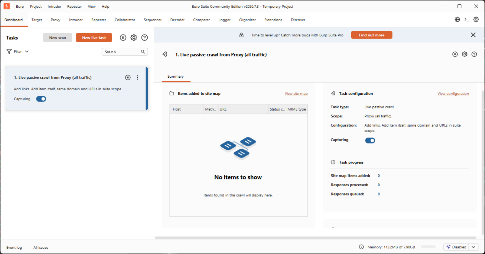
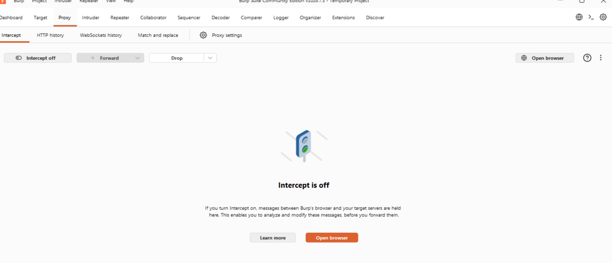
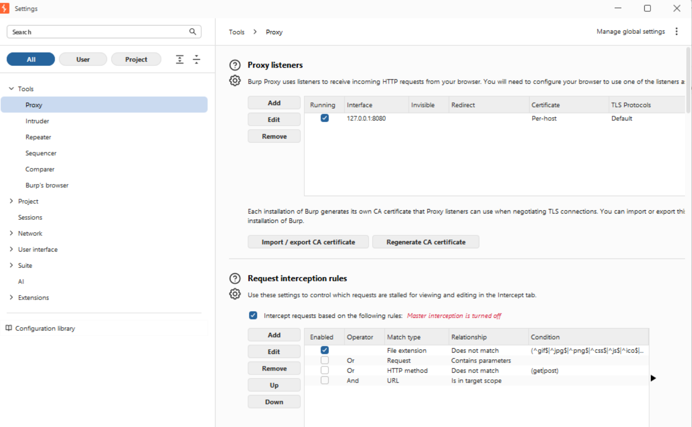

CP2414 Network Security — Mastery Program
26-CP2414-SIN-CAM-TR3 · JCU Singapore · Solo instructor, ~75–78 students · Prep window: 17 Aug → 14 Sep 2026
Your 4-week runway
Mastery Plan
Built from the actual lecture slides, practicals, and seminar materials you uploaded — not guesswork. Four phases, each with a clear goal and concrete tasks. Tick things off as you go.
27 days, one focus per day
Daily Countdown
Tap a day to open it, tap a task to check it off — your progress is saved automatically on this device. Days flagged critical are the two places where skipping the hands-on prep means finding out what's broken live, in front of the class, instead of tonight.
Hard-won, TR3 2026 — reuse this next time
Setup Playbook: VirtualBox + BeeBox
This exact setup took a full extra day to get right the first time — an ARM laptop dead end, a corrupted-looking snapshot chain that turned out to be a genuine VirtualBox limitation, and a wrong-window mix-up or two along the way. Everything below is what actually happened and what actually fixed it, so a future trimester doesn't have to rediscover any of it.
On the machine you intend to use: Settings → System → About → System type. You need it to say "x64-based processor."
The extracted VM needs roughly 5 GB free. A USB stick both often lacks the space and is genuinely unreliable for running a VM's disk files from directly. Extract straight to something like C:\CP2414\bee-box. If a laptop reboots mid-extraction (it happened once here), the safest move is to delete the extracted folder entirely and re-extract fresh rather than assume it's intact.
BeeBox ships as VMware's own format (.vmx / .vmdk files), not a VirtualBox .ova — so File → Import Appliance won't work. Build it manually instead:
- VirtualBox → New → name it, leave ISO Image as <not selected>
- OS: Linux, Distribution: Ubuntu (64-bit). Double-check this manually — the wizard has been seen auto-guessing "Microsoft Windows" or even an ARM variant based on host hardware, regardless of what's actually being installed.
- Click through to Finish — this creates a VM with a throwaway blank disk. That's expected; you're about to replace it.
- Right-click the new VM → Settings → Storage → select the blank disk → remove/delete it → Add Hard Disk → Choose Existing → browse to the extracted folder
VM Settings → Network → Attached to: Bridged Adapter. This is what lets your laptop and BeeBox see each other as two separate devices on the same network — required for Wireshark captures, browser access to bWAPP, and the Week 8 SSH exercise. Confirmed working when BeeBox's IP and the host laptop's own Wi-Fi IP share the same subnet (e.g. both 192.168.1.x) but different last numbers.
- The command must run inside the BeeBox VM window itself — not in a PowerShell/Command Prompt window on the host laptop. Both look like black terminal windows and are easy to mix up mid-session.
- Inside BeeBox: right-click the desktop → Open Terminal (or Applications → Accessories → Terminal)
- The command is ifconfig — not ipconfig (that's the Windows-only spelling, will error with "command not found" on Linux)
- Look for the eth0 block → inet addr: — that's the IP. Confirmed working output looks like: inet addr:192.168.1.108 Bcast:192.168.1.255 Mask:255.255.255.0
Verify from the host laptop's normal browser (Chrome/Firefox/Edge — not typed into PowerShell): http://<that-ip>/bWAPP/login.php should load the login page.
- Linux login (auto-applied on boot): bee / bug
- bWAPP web login: bee / bug — same as Linux, and the same as Week 8's SSH exercise (ssh bee@<ip>)
- Linux root: root / bug
- MySQL root: root / bug
Why does BeeBox even exist? BeeBox is a computer built on purpose to be broken — a safe, fake, throwaway target. Real websites will kick you off (or call the police) if you try SQL injection on them. BeeBox is a practice dummy that's legal and expected to be attacked, so you're never touching anything real.
So what is bWAPP, exactly — and how is it different from BeeBox? This is a genuinely confusing pair of names, so slow down here: BeeBox is the computer (the whole virtual machine — think of it as an entire fake laptop living inside your real one). bWAPP is one website that happens to be running on that computer — the same way your real laptop can run a browser AND Spotify AND Word at once, BeeBox happens to be running exactly one thing: bWAPP. bWAPP stands for "buggy Web APPlication" — it's a single practice website, deliberately built with dozens of real, famous security holes baked in on purpose (SQL injection, directory traversal, XSS, and more), each one accessible from its own menu inside the site once you log in. You never install bWAPP separately — it comes pre-loaded inside BeeBox already, which is exactly why the "bWAPP, or a buggy web application" download link on Blackboard (item 5 in the list above) is just background reading, not a real download.
What is Burp actually doing? Normally, your browser talks straight to a website and you never see the raw conversation — you only see the finished page. Burp sits in the middle of that conversation and lets you freeze-frame it: see the exact request your browser sent, and edit it before it goes out. That's it. That's the whole job.
If you took Burp out of the picture entirely — closed it, unplugged the proxy — bWAPP would still work. You could still open the login page, still click around, still even type blah' or 1=1# straight into bWAPP's own search box and it would still work, because that attack lives in what you type, not in Burp. What you'd lose is the ability to SEE the raw request underneath, and to edit fields your browser normally hides from you (like values sent as POST data, not visible in any address bar). Burp is a magnifying glass and an editor for traffic you could not otherwise see or touch — it doesn't create the vulnerability, it just lets you watch and tamper with it up close.
The "another laptop" question — and why it matters: if a friend's laptop, on the same WiFi, typed http://127.0.0.1:8080 into their own browser, they would NOT see your Burp. They'd get an error, or nothing at all. Here's why: 127.0.0.1 isn't a real address on the network — it's a special word that means "myself," and it always means the machine currently asking the question, never a specific laptop across the room. Your laptop asking for 127.0.0.1 means "me" (and finds Burp, because Burp is running on you). Their laptop asking for 127.0.0.1 means "me" too — but from THEIR laptop, where nothing is running on port 8080. This is exactly why BeeBox needed its own real network IP (Step 5) instead of also using 127.0.0.1: BeeBox has to be reachable BY your laptop, from across the network — "myself" wouldn't work for that.
- Start Burp completely (past the welcome screen, main window open)
- Confirm the 8080 listener shows Running
- Turn Burp's Intercept to off (see below — it's on by default and will look "frozen" otherwise)
- THEN set the browser's proxy
- THEN load bWAPP


- Open Burp Suite Community Edition → on the welcome screen leave "Temporary project in memory" selected → click Next → on the following screen keep default config → click Start Burp. This is the actual moment the proxy engine starts — not before.
- Go to Proxy tab → click the small gear icon labelled Proxy settings (to the right of "Match and replace" — NOT the Intercept sub-tab, which shows no listener info) → this opens the Settings window on a page called "Proxy listeners." Read the box below before moving on — it explains what you're actually looking at.

HOW to confirm it: find the tick in the Running column, next to that row. See a tick? You're done. Nothing else to click, type, or set up on this screen.
WHY this matters, in the simplest terms: "127.0.0.1" is a special address that always means "this same computer, talking to itself." "8080" is just a door number on that computer. This table is confirming that door 8080 is open and Burp is standing right behind it, waiting. If that door isn't open, nothing you do later will work — your browser will have nowhere to send its traffic.
There are TWO different addresses in this whole setup — don't let them blur together:
- Address #1 — Burp's own address: 127.0.0.1:8080. This is what the "Interface" column on this screen shows. It is always the same, on every laptop, every time. Memorize this one — you're about to type it into your browser in the very next step.
- Address #2 — BeeBox's address (a completely different computer). You found this back in Step 5 by running ifconfig inside the BeeBox VM. It looks like 192.168.x.x, and it changes every time BeeBox restarts. You'll type THIS one into the browser's normal address bar later, to actually open the bWAPP website — never into the proxy settings.
- If the Running box is unticked, click Edit, tick it, and click OK — don't add a second listener, edit the existing row.
- If there's no row at all, click Add, set the port to 8080, bind to 127.0.0.1, and save.
- Ignore the separate red text further down the same Settings page reading "Master interception is turned off" — that's a different feature entirely (it's about pausing individual requests, not about whether the door is open). Seeing that red text is normal and fine.
Firefox — do this (easiest browser to use for this lab): Settings → Network Settings → Settings... → tick Manual proxy configuration → in the HTTP Proxy box type 127.0.0.1 → in the Port box type 8080 → tick "Also use this proxy for HTTPS." → click OK. That's it — Firefox now sends everything through Burp's door.
Confirm it's working: load http://<beebox-ip>/bWAPP/login.php in the proxied browser, log in with bee / bug, then check Burp's Proxy → HTTP history tab — requests like GET /bWAPP/login.php should appear as you click around. If history stays empty even though the page loaded fine, that's the tell-tale sign the browser's proxy setting silently didn't take (see the warning above) — go back and re-verify the proxy toggle/fields, fully close and reopen the browser (proxy settings are read at browser startup, not live), then reload the page.
What every menu item is for, and what order to do things in — one guide per practical
Practical Guides
Ten practicals run across the trimester. Click a tab below to jump to that practical's orientation guide — what it covers, the hands-on steps condensed to what actually matters, and every short-answer question listed for your own reference. Each tab has its own "Listen" button.
What every menu item is for, and what order to do things in
Practical 1 — Full Orientation Guide
Week 1's Blackboard folder has seven items sitting next to each other with no explanation of what each one is for or what order to touch them in. This section exists to remove that confusion entirely — what the prac is actually about, what every single link is, and a step-by-step path for both "using the lab's computer" and "using your own laptop," since those two paths genuinely diverge.
Prac 1 has two halves. Half 1 is nine short-answer written questions covering core security concepts (CIA Triad, threats vs attacks, security design principles, SQL injection, session hijacking, etc.) — no VM needed, answer these from the lecture material and your own understanding. Half 2 is hands-on: a 20-25 minute warm-up on a live hacking practice site, then a guided walkthrough of HTML Injection attacks against a deliberately vulnerable local web app (bWAPP), using Burp Suite to intercept and manipulate your own web traffic. The hands-on half needs the VM/software setup — that's what the rest of this section walks through.
The official instructions genuinely branch here — don't mix steps from both paths.
- Lab computer: VirtualBox, BeeBox, AND Burp Suite ALL run as separate virtual machines (three VMs total, or two if BeeBox/Burp images are pre-installed). Both VMs need their network adapter set to Bridged, both need their own IP addresses on the same subnet, and you manually type BeeBox's IP into the Burp VM's browser.
- Your own laptop (this is the path this dashboard's Playbook/Step 0-6 above already documents in full): only BeeBox runs as a VM. Burp Suite installs directly on your real laptop (the "host"), not inside a second VM. This is simpler — you don't need to configure a second IP address for Burp, since it's just running as a normal program on your own machine. You only need BeeBox's IP (via ifconfig inside the VM, per Step 5 above) and Burp's own proxy listener (127.0.0.1:8080, per Step 6 above).
- Install VirtualBox on your laptop
- Download BeeBox (via the Alternative link), extract it, build a VM around the existing bee-box.vmdk disk (see Playbook Steps 0-3 above for the exact gotchas)
- Set BeeBox's network adapter to Bridged (Playbook Step 4) — this makes BeeBox act like a separate physical computer on your network with its own IP address, instead of hiding behind your laptop's IP, so your browser can reach it directly
- Boot BeeBox, run ifconfig inside it to get its IP (Playbook Step 5)
- Install Burp Suite Community Edition directly on your laptop (not in a VM)
- Start Burp fully — click past the welcome screen to the main window, since nothing is running until you do. Then in the Proxy tab, confirm the 127.0.0.1:8080 "listener" shows Running. A listener is just Burp sitting and waiting for web traffic to arrive on that address — checking this box is how you prove Burp is actually ready to catch anything, before you try to send it traffic. Also switch Intercept to off for now, or every request will pause and look frozen (full walkthrough: Playbook Step 6)
- Point your laptop browser's proxy at 127.0.0.1:8080 — this tells the browser to send every web request through Burp first instead of straight to the internet, which is what lets Burp actually see and capture your traffic (Firefox: browser-level setting; Chrome: Windows system proxy setting — both detailed in Playbook Step 6)
- Visit http://<beebox-ip>/bWAPP/login.php, confirm the request shows up in Burp's HTTP history — this proves the whole chain is connected
- Log into bWAPP with bee / bug, set security level to low
- Select HTML Injection – Reflected (GET) from the bug menu, click Hack
- Enter a first/last name, submit, then try editing the values directly in the URL bar (e.g. ?firstname=I+CHANGE&lastname=THE+NAME) and observe the welcome message updates to match — this demonstrates the app trusts and reflects URL input without sanitizing it
- Try injecting actual HTML tags as the name values (e.g. a fake link or styled text) to see the page render your injected HTML rather than treating it as plain text — this is the actual vulnerability
- Repeat with HTML Injection – Reflected (POST) — note the values can no longer be changed via the URL bar (POST data isn't in the URL), but injection through the input box itself still works
- Try HTML Injection – Reflected (Current URL) — this time turn Burp's Intercept on so it pauses the request, edit the raw Host: header directly inside Burp before forwarding it, then observe how the page reacts
- Close-up (do this every session, non-optional): power off both VMs, then right-click each → Remove → "Delete all files." Skipping this can break the VMs for later weeks.
- What is the CIA Triad? Explain each element.
- Give 3 computer security challenges, why they're challenging, and how to tackle them.
- What's the difference between "threat" and "attack"?
- Disadvantages of connectionless integrity service vs. connection-oriented — should you worry about them?
- Give 5 fundamental security design principles, explained in your own words.
- Explain "drive-by download" — how do attackers perform it?
- What is SQL injection?
- What is a session token, and what's it used for?
- What is Session Hijacking, and why would an attacker want to do it?
Register at hackthissite.org/register (do NOT use a Microsoft/Outlook email — it's known not to work with this site) and spend 20-25 minutes exploring/hacking the site before moving to the BeeBox setup. This is a live external practice site, unrelated to the BeeBox VM — just a warm-up exercise.
SQL Injection, Directory Traversal, DNS Poisoning, NAT & PAT
Practical 2 — Administering Secure Network
This prac is about breaking things on purpose, in a safe sandbox, so you understand exactly how attackers break real things. Every hands-on exercise here follows the same pattern: you do the normal, expected thing first (a baseline), then you do the malicious thing, and you compare the two results to see what changed and why the app let it happen.
The analogy: imagine a bouncer at a club who checks a guest list by reading it out loud: "Is the name on the paper you handed me on the list? Yes or no." SQL injection is what happens when, instead of writing your name on the paper, you write "my name OR just let everyone in" — and the bouncer, not being smart enough to tell the difference, reads your trick sentence as a real instruction and opens the door for everyone.
In real terms: the movie search box on bWAPP takes whatever you type and drops it directly into a database query behind the scenes, something like SELECT * FROM movies WHERE title = 'your_text'. The database can't tell the difference between "text the user is searching for" and "a command the user is giving it" — it just runs whatever ends up between the quotes.
- With BeeBox + Burp running, open bWAPP and pick "SQL Injection (GET/Search)" from the bug menu.
- Baseline first: search "test". This is a normal, honest search — it should return nothing (or whatever genuinely matches), proving the search box works as intended before you try to break it.
- Now the injection: search blah' or 1=1# instead. Here's what that does character by character: the ' closes off the quote the database was expecting your search text to sit inside — you've escaped the "box" you were meant to stay in. or 1=1 is a condition that is ALWAYS true (1 does always equal 1), so instead of "title = the movie I typed", the query effectively becomes "title = blah, OR just always match everything." The # at the end comments out anything the app was going to add after your input, so it doesn't accidentally break the syntax.
- Observe: the search now returns every single movie in the database, even though you never typed a real movie name. That's the vulnerability proven — you turned a search box into a command.
The analogy: think of a filing cabinet with a locked drawer you're allowed to open — the "documents" drawer — but the whole cabinet, all the other drawers, sit in the same room. Directory traversal is the equivalent of the drawer having a false back: if you know to write "go back one drawer" (../) enough times, you climb out of the drawer you were given access to and start rifling through drawers you were never supposed to see.
- Pick "Directory Traversal - Directories" from the bug menu and hit Hack.
- Look at the URL — it ends in ?directory=documents. That parameter is literally telling the web server which folder to list the files of. This alone is the red flag: the server is trusting whatever folder name you put there.
- Try replacing documents with ../, then ../../, then ../../../, and so on — each ../ means "go up one level in the folder structure" (this is a standard operating-system instruction, not a hack in itself — the vulnerability is that the server obeys it blindly instead of restricting you to the one folder it meant to share).
- As you add more ../, you'll see the file listing change to reveal deeper and more sensitive system folders — eventually you can reach root-level directories of the entire server, folders that have nothing to do with the website at all.
The analogy: DNS is the internet's phonebook — you tell it a name ("www.google.com.au") and it tells you the actual "phone number" (IP address) to call. DNS poisoning is like sneaking into someone's phone contacts and secretly renaming a stranger's number to say "Mum" — the phone still dials correctly, the name just now lies about who you're really reaching.
- Outside any VM, on your real browser, go to nslookup.io and look up the real IP addresses for both www.google.com.au and www.github.com. Write both down — you need github's IP for the next step.
- Open Notepad as Administrator (this matters — the hosts file is a protected system file, a normal Notepad window won't have permission to save changes to it) and open C:\Windows\System32\drivers\etc\hosts.
- This file is your computer's own private, personal phonebook that it checks BEFORE ever asking the real internet-wide phonebook. Add a new line at the end: GitHub's IP address, a space, then www.google.com.au. Save the file.
- Now visit www.google.com.au in your browser. Because your computer checked its own (now poisoned) private phonebook first, it sends you to GitHub's servers instead — while the address bar still calmly says "google.com.au". This is exactly the trick behind real DNS poisoning/spoofing attacks: the URL you trust visually is no longer telling the truth about where your traffic is actually going.
- Very important — delete that line and save again once you're done observing this, so your computer's real browsing isn't broken afterward.
The analogy: imagine an apartment building. The building has ONE street address that the outside world (the postal service) knows about. But inside, there are dozens of individual apartments, each with their own door. NAT (Network Address Translation) is the building's front desk: it takes mail addressed to "the building" and works out which specific apartment (device) it's actually meant for. PAT (Port Address Translation) is what happens when many apartments share that same single street address at once — the front desk tracks which apartment is expecting which delivery, all under one shared public identity.
- On your own computer, open cmd/terminal and run ipconfig (or ifconfig on Linux/Mac). This shows your local/private IP address — your specific "apartment number" inside your home or campus network.
- Now search "my IP address" on Google. This shows your public IP address — the "street address" the wider internet sees you as. Compare it to your local one from step 1 — they're almost certainly different. That difference IS NAT at work: your router quietly translates between "the one address the internet knows" and "the many private addresses your home devices actually use."
- Compare your public IP to your partner's, sitting next to you. If you're on the same home/campus network, you'll likely share the exact same public IP, even though your private IPs differ — proving that one shared "street address" is fronting for multiple separate devices.
- As a group, have one person start a mobile hotspot and have two others join it. All three of you check "my IP address" again — you should all show the identical public IP despite being three separate physical phones/laptops. This is PAT in action: your hotspot's single public IP is being shared across every connected device simultaneously, with the hotspot internally tracking who gets which return traffic based on the port numbers involved (hence "Port" Address Translation).
- How can you prevent an SMTP server from sending unable to deliver the message back to spammers (draw a diagram/picture if you'd like and explain)? Why is it important to do so?
- Is it recommended to install a spam filter on a POP3 server? Why or why not?
- What is a Virtual Private Network (VPN)? And what are VPN concentrators?
- What is a Demilitarised zone (DMZ)? Why would you want to employ it to a network?
- What is "port security"? What are the techniques can you use to protect the ports?
- Explain the term "Network Separation".
- What is flood guard? What kind of attacks associate with it?
- A company has asked for your opinion on their network infrastructure: (a) its employees need access to their computing devices over the internet — how would NAT technologies be used for that? (b) employees' desktops/devices aren't tied to fixed department areas, as staff move between departments/floors — what solution would you recommend, and why, from a network security standpoint?
Wireshark packet sniffing, and Windows Firewall rules
Practical 3 — Intruders and Firewalls
Two separate skills this week: first, "listening in" on your own network traffic (Wireshark), so you understand what data actually looks like as it travels — nothing is hidden by default. Second, controlling what's allowed in and out of a machine (the Windows Firewall) — the difference between a network you can eavesdrop on and one you can actually lock down.
The analogy: imagine every piece of data your computer sends or receives is a postcard, not a sealed letter — anyone standing at the right point on the delivery route can read every word on it as it passes by. Wireshark is a tool that stands at that point (your own network interface) and copies down every postcard going past, so you can read them afterward. It doesn't create any new traffic — it just watches what's already happening.
- Open Wireshark, select your active interface (Ethernet or Wi-Fi — whichever one you're actually online through) and click Start. It immediately starts logging every packet flowing in or out.
- Open cmd/terminal and run ping www.google.com.au. A ping is a deliberately simple "are you there?" message sent to a remote server, followed by that server's "yes, still here" reply — it's the smallest, easiest kind of network traffic to recognise, which is exactly why it's used here as a clean example to spot in the noise.
- Back in Wireshark, type icmp into the filter bar (ICMP is the specific protocol ping traffic uses) and hit Enter — this hides everything else and shows you only your ping packets. Click one, expand "Internet Control Message Protocol" then "Data", and look at the raw bytes shown. Notice there's nothing hidden or encrypted about it — this is genuinely everything that traveled across the wire, in plain view, which is the whole point of the exercise: unencrypted traffic really is that exposed to anyone positioned to watch it.
The analogy: a firewall is a bouncer standing at your computer's front door, checking every single thing trying to come in OR go out, against a rulebook. By default the bouncer lets most things through. In this exercise you write your own explicit rule — "block anything trying to leave through door number 80" — and then prove it works by testing that the thing you blocked genuinely stops functioning.
- With BeeBox + BurpSuite VMs running (both set to Bridged network so they can talk to each other, and Burp's Intercept switched off for now), confirm bWAPP loads normally in the browser first — this is your "before" baseline, so you can actually tell later whether your firewall rule changed anything.
- Go to Windows Defender Firewall (on the BurpSuite VM) → turn it on for both Private and Public networks, and tick "Block all incoming connections" under Public settings. This step alone doesn't block bWAPP — it's general hardening, worth understanding on its own: it means if you were ever on an untrusted public Wi-Fi, nothing could reach IN to your machine uninvited.
- Now the specific part: Advanced Settings → Outbound Rules → New Rule → Port → TCP → Specific remote port 80 → Block the connection → apply to all three profiles (Domain/Private/Public) → name it "Blocking_Port_80" → Finish. Port 80 is the standard port ordinary (non-secure) web traffic uses, so this rule specifically says "refuse to let this machine make any outgoing web requests on the normal web port."
- With Burp's Intercept still off, try loading bWAPP again in the browser. It should now fail to load — proof the rule is genuinely blocking outbound web traffic, not just sitting there unused.
- Go back into Outbound Rules and click "Restore Default Policy" to remove the custom rule, then confirm bWAPP loads normally again — showing the block was entirely caused by your rule and nothing else. Finish by turning off and deleting both VMs, as always at the end of a prac.
- Who are misfeasors? Give some examples of their intrusion.
- There are two ways to protect a password file. What are they? Explain.
- With regards to intrusion detection, explain: (a) True positive (b) False positive (c) True negative (d) False negative.
- What is statistical anomaly detection?
- What is rule-based Intrusion detection?
- What are honeypots? (a) What are the uses of them? (b) Give three possible locations to deploy them and explain the advantages/disadvantages of each location.
- What is the difference between "reactive" and "proactive" password checking?
- What is the purpose of using "salt" in the context of UNIX password management?
- What is the difference between a packet filtering firewall and stateful inspection packet firewall?
- Explain the personal firewall in a home environment.
- Explain distributed firewalls. Where can the firewalls be placed? Why are they placed there?
Classic symmetric ciphers — Caesar, substitution, permutation — and why weak ones break
Practical 4 — Symmetric Encryption
This prac uses CrypTool, a free program built for exactly this kind of playing-around. The theme running through all of it: these are "classic," old-fashioned ciphers — the point is not that they're secure (they're not, and you'll prove that yourself at the end), but that seeing simple encryption with your own eyes builds the intuition you need before tackling modern ciphers like AES next week.
Install CrypTool 1.4.42 on your own computer (or open it on the BurpSuite VM if you're using the lab). Create a new file and type "hello world" — this is your plaintext for every exercise below.
The analogy: imagine a decoder ring toy — two circles of the alphabet, one fixed and one you can spin. Spin it by 3 letters and every "A" you write becomes "D", every "B" becomes "E", and so on. That's a Caesar cipher: shift the whole alphabet by a fixed number of positions. ROT-13 is just a Caesar cipher fixed at exactly half the alphabet's length, which has the neat (and insecure) property that encrypting twice gets you back to the original text.
- Encrypt/Decrypt → Symmetric (classic) → Caesar/Rot-13. Choose "Number value", enter 3 as your key, and watch "Properties of the chosen encryption" show you the resulting shifted alphabet (A→D, B→E, etc.) — this makes the mechanism completely visible before you even click Encrypt.
- Click Encrypt and observe "hello world" becomes "khoor zruog" — every letter shifted exactly 3 places forward. Decrypt it back using the same key (3) to confirm the process reverses cleanly.
The analogy: where Caesar just slides the alphabet along like a ruler, substitution throws the alphabet in a bag and pulls letters out in a completely different order — A might map to X, B to M, C to Q, with no predictable pattern connecting them. Atbash is one famous fixed version of this: it simply reverses the alphabet (A↔Z, B↔Y, and so on).
- Encrypt/Decrypt → Substitution/Atbash. Enter key "XYZ" in the Key box and look at "Information on the substitution encryption" — it shows exactly how the 26-letter alphabet gets remapped starting from those three letters.
- Encrypt "hello world" and observe the scrambled result, then decrypt it back to confirm it reverses.
The analogy: Caesar and substitution both change WHAT each letter becomes. Permutation instead keeps every original letter exactly as it was, but shuffles their ORDER — like taking the letter tiles of a word and rearranging them into a different sequence, following a specific shuffle pattern (the key).
- Encrypt/Decrypt → Symmetric (classic) → Permutation/Transposition. Type key "ABCD" and watch it convert into the numeric permutation pattern 1,2,3,4. Then replace it with "TEST" and watch the pattern change to 3,1,2,4 — the letters of your key word, sorted alphabetically, tell the tool which position each column should move to.
- With "TEST" as the key, click Encrypt then "Display ciphertext" to see the shuffled result. Decrypt it back to confirm.
Why this matters: a Caesar cipher only has 25 possible shift values (1 through 25) — small enough that a computer, or even a patient human, can just try every single one and see which produces readable English. This is the whole point of the exercise: watching an automated tool crack your own "secret" message in seconds is what makes the danger of weak encryption feel real, rather than just something you're told about in a lecture.
- Re-encrypt "hello world" with Caesar (any shift). On the resulting ciphertext window, go to Analysis → Symmetric Encryption (Classic) → Ciphertext-Only → Caesar, click through the OK prompts, then Decrypt.
- Observe whether it recovers your original message correctly, and think about why (or why not) — this connects directly to two of the short-answer questions below about brute-force attacks and ciphertext-only attacks.
- Decrypt ciphertext "GDKKN" using the substitution table given in the prac PDF (Plaintext A–N mapped to Ciphertext N,A,B,C...M) — work backwards from each ciphertext letter to its plaintext letter.
- Given plaintext "IJKL ABCD WXYZ GHIJ" becomes ciphertext "LMNO DEFG ZABC JKLM", and the key is one of 0,1,2,3,4 — work out which shift value produces that exact transformation (compare how far each letter moved).
- What are the 5 elements of a symmetric encryption scheme? Explain.
- Explain the difference between a block cipher and a stream cipher in plaintext processing.
- In cryptanalysis, explain what is known to a cryptanalyst for each: (a) Ciphertext only (b) Known plaintext (c) Chosen plaintext.
- An encryption scheme is computationally secure if the ciphertext generated meets one or both of what criteria?
- Explain brute-force attack.
- Briefly explain: DES, Triple DES (3DES), AES.
- What is the difference between random and pseudorandom numbers?
- With regards to a sequence of random numbers, explain: (a) Randomness (b) Unpredictability.
- What are the advantages/disadvantages of triple DES?
Modern symmetric encryption (AES), password hashing, and asymmetric encryption (RSA)
Practical 5 — Symmetric & Asymmetric Encryption
Last week's ciphers were toys — easy to crack, mostly historical. This week is the real thing: AES, the encryption standard actually protecting your banking apps and Wi-Fi today, plus your first look at asymmetric (public-key) encryption, which solves a completely different problem than everything you've done so far.
The analogy: think of AES as a combination padlock with an astronomically large number of possible combinations — not "spin the dial 0 to 99" but a number so large that even a computer trying billions of combinations a second would still need longer than the age of the universe to try them all. That's the whole security model: not that the lock is unpickable in theory, just that brute-forcing it is completely impractical.
- Encrypt/Decrypt → Symmetric (modern) → AES (CBC). Enter the key 00 01 02 03 04 05 06 07 08 09 0A 0B 0C 0D 0E 0F (this is 128 bits — 16 bytes, written in hex) and click Encrypt. Inspect the hex/ASCII output on the right — notice it looks like complete noise, nothing recognisable, even though your key here is about as simple and orderly as a 128-bit key could be.
- Now run Analysis → Symmetric Encryption (modern) → AES (CBC) → Start. Watch the "Remaining time" estimate the tool gives you for brute-forcing this — it'll show something like 1.1×10²⁵ years. For context, the universe itself is roughly 1.4×10¹⁰ years old. Cancel out of it once you've seen the number; this is the point of the exercise, not something you're meant to wait out.
- Repeat the whole sequence with a near-zero key (00 01) instead, and compare the outputs. Even a "simple-looking" key produces output that's just as scrambled — good encryption doesn't get weaker just because the key looks like an easy pattern to a human eye.
The analogy: a hash function is like a fingerprint machine for text — feed it any input, of any length, and it spits out a fixed-length "fingerprint" that's unique to that exact input, but you can never work backwards from the fingerprint to reconstruct the original text. This exercise shows a real, practical use of that: turning a human-memorable password ("Bazinga") into a proper fixed-length encryption key.
- Create two files: one with "Don't panic" (your plaintext) and one with "Bazinga" (your password).
- On the "Bazinga" window: Indiv.Procedures → Hash → MD4. Copy the resulting hex value shown — this is your password's fingerprint, and it's exactly the right length to use as an AES key.
- Use that hex fingerprint as your AES key against the "Don't panic" text — encrypt it, then decrypt it back using the same fingerprint, confirming the round trip works.
The analogy: everything so far (Caesar, substitution, AES) is "symmetric" — the SAME key locks and unlocks the message, meaning both sides need to already share that secret key somehow, safely, beforehand. Asymmetric encryption solves the problem of "how do two strangers who've never met safely agree on a shared secret?" with a mailbox analogy: anyone can drop a letter into your mailbox slot (your public key — safe to hand out to literally anyone), but only you hold the physical key that opens the box and reads what's inside (your private key — never shared with anyone).
- Close CrypTool and reopen it fresh (a clean starting text window).
- Encrypt/Decrypt → Asymmetric → RSA Encryption. Select the one available recipient (the only person here who holds a matching private key) and click Encrypt — notice you didn't need to share any secret with them beforehand, you just used their public key.
- Encrypt/Decrypt → Asymmetric → RSA Decryption, enter the PIN, click Decrypt, and confirm the message matches your original — proving only the holder of the matching private key could ever read what was encrypted to their public key.
- What are the differences between symmetric and asymmetric cryptography?
- Is it possible to perform authentication solely by using symmetric encryption? Explain.
- What is the problem with message authentication approaches that do not rely on encryption?
- Explain how to produce Message Authentication Code (MAC)?
- Explain one-way hash function/secure hash function.
- What is a message digest?
- What is SHA?
- What is the difference between MAC and HMAC?
- What are the 6 elements of public-key encryption? Explain.
- What are the uses of public-key cryptosystems?
- What is RSA? What are the possible attack approaches that can be done on RSA? Explain.
- Briefly explain how Diffie-Hellman key exchange works.
- Can key exchange protocol prevent a man-in-the-middle attack? Explain.
Creating and verifying a self-signed digital signature in Adobe Acrobat
Practical 6 — Digital Signature
A digital signature answers two questions at once: "did this really come from the person it claims to?" and "has it been tampered with since they signed it?" This week you'll create your own signing identity and actually sign a real PDF form with it, then inspect the certificate that makes the whole thing verifiable.
Imagine sealing a letter with a wax stamp bearing your unique family crest. Two things follow from that seal: (1) anyone who knows your crest can be reasonably confident the letter genuinely came from you, and (2) if the seal is broken when the letter arrives, the recipient knows someone tampered with it after you sent it. A digital signature does both jobs mathematically — it's tied to a private key only you hold (proving authorship), and it's also mathematically linked to the exact content of the document, so even a single changed character breaks the "seal" and shows up as invalid.
- Install Adobe Acrobat Reader if you don't already have it. Download the "REQUEST FOR REPLACEMENT JCU AWARD" fillable PDF form from JCU's site, open it in Acrobat, and sign in with your JCU email when prompted.
- Create your self-signed digital ID (this is you personally acting as your own trusted authority, rather than a certificate bought from a company — the practical explicitly notes real sensitive business transactions would normally use a certificate authority instead, but for learning purposes self-signing is fine): Edit → Preferences → Signatures → More (next to Identities & Trusted Certificates) → Digital IDs → click the Add ID button → choose "A new digital ID I want to create now" → Next.
- Choose "New PKCS#12 digital ID file" (NOT the Windows Certificate Store option — the practical flags this specifically as unsafe, because it stores your ID somewhere every other Windows application on the machine can also reach it). Click Next.
- Fill in your name and email — this is the identity information that will be baked into the certificate and shown whenever anyone inspects your signature later. Choose 2048-bit RSA (stronger than 1024-bit, at the small cost of slightly less universal compatibility — the tradeoff between security strength and compatibility comes up again in the short-answer questions).
- Set a password for the ID file — this password is what protects your PRIVATE key specifically (not the certificate itself, which is meant to be shared). Anyone with this password and file could sign documents claiming to be you, so treat it like any other important password. Click Finish.
- Back in the PDF: click the Signature field, select your new Digital ID, click Continue. At the Appearance dropdown, click "Create" to design how your visible signature looks on the page (this visual part is cosmetic — the real cryptographic proof happens underneath it regardless of how it looks). Save the appearance, enter your password, click Sign, and save the signed file.
- Now verify it: click your signature on the page → Signature Properties → look at "Validity Summary" (this is where Acrobat tells you whether the document has been modified since signing, and confirms the signing time came from the signer's own computer clock) → click "Show Signer's Certificate" → click through every tab in the Certificate Viewer (Summary, Details, Revocation, Trust, Policies, Legal Notice) and observe what information is stored in each. This is the same certificate-inspection process browsers do automatically, invisibly, every time you visit an HTTPS website.
- Can message authentication and user authentication be used interchangeably? Why or why not? Explain.
- What are the four general means of authenticating a user's identity? Explain.
- In Symmetric key distribution, how is the permanent key used for distributing session keys?
- With regards to Kerberos, what are timestamp and lifetime of a ticket (issued by the TGS)? Why are they important?
- What is a nonce in Version 5 Kerberos and what is the use of it?
- What is the main problem with publishing a public-key? How has the problem been tackled?
- What is public-key infrastructure?
- Explain Identity federation.
- What is single sign-on (SSO)?
Remote access with TeamViewer, and touring the four cloud service models
Practical 7 — Network Access Control & Cloud Security
Two threads this week that connect to the same idea — controlling exactly who/what is allowed to reach a resource, and how much of the underlying infrastructure you're trusting someone else to manage on your behalf.
Download and install TeamViewer on your personal computer AND your mobile phone (not the lab machines — this needs to be devices you actually control end to end). Create a TeamViewer account following their own official guide, log in, then follow their guide again to practice connecting from one of your devices into the other. The point of doing this yourself is feeling how remote-access software works from both the "controller" and "controlled" side — this is the exact category of tool NAC (Network Access Control, the short-answer topic this week) exists to gate and monitor, since remote-access tools are a favourite target for attackers to abuse if they're not properly controlled.
The analogy: think of these four categories as four different levels of renting a place to cook. SaaS is like eating at a restaurant — the meal (finished app) is fully prepared for you, you just consume it (e.g. Dropbox, Google Docs). PaaS is like renting a fully-equipped commercial kitchen — you bring your own recipe (your code) but the ovens, benches, and utilities (the platform) are already provided and managed for you (e.g. Azure App Service). IaaS is like renting an empty warehouse shell — you're given raw space, power, and a foundation, but YOU have to install and manage everything else yourself (e.g. Azure's raw virtual machines). SecaaS is a security specialist you hire to watch over any of the above, rather than a place to cook at all — a monitoring/protection service layered on top (e.g. Azure Sentinel).
Watch out: some of these services ask for a bank card to start a "free trial." You don't need to actually subscribe to anything to complete this exercise — just explore what each service offers and, where genuinely free, register and click around.
- SaaS — Dropbox, Google Docs.
- PaaS — Microsoft Azure App Service.
- IaaS — Microsoft Azure (core virtual infrastructure).
- SecaaS — Microsoft Azure Sentinel.
- What is Network Access Control (NAC)? Why is it needed?
- What is the quarantine network, and what is the purpose of having it?
- Explain the following NAC enforcement methods: (a) IEEE 802.1X (b) VLANs.
- What is an Extensible Authentication Protocol (EAP) method? What do we use it for?
- What is cloud computing?
- Explain the initialisms: (a) SaaS (b) PaaS (c) IaaS (d) SecaaS.
- Give three cloud security threats and their countermeasures.
- Explain the database environments: (a) Multi-instance model (b) Multi-tenant model.
- How can you protect data in the cloud?
- Give five examples of cloud security as a service (SecaaS) and explain each.
Connecting to BeeBox securely over SSH, instead of plain unencrypted access
Practical 8 — Transport Layer Security
Remember Prac 3, where Wireshark showed you that unencrypted traffic is just readable postcards to anyone watching? This week's hands-on is the fix for that problem, applied to remote logins specifically: SSH wraps your connection in an encrypted tunnel so nobody watching the wire can read your password or commands as they pass by.
Logging into a remote machine the old, insecure way (Telnet) is like shouting your password across a crowded room to the person you're talking to — anyone nearby can just listen in. SSH is like being handed a private, soundproofed phone line to that same person instead — the conversation still reaches them, but nobody standing nearby can make out a single word of it.
- Turn on your BeeBox VM (network adapter set to Bridged, same as always). Open its terminal and find its IPv4 address (via ifconfig), and note it down.
- On your HOST machine (not inside any VM), open cmd or terminal and run ssh bee@ip_address, swapping in the real IP from step 1. The password is bug.
- The first time you connect, you'll be asked to accept a "fingerprint" — this is SSH showing you a unique identifier for the server you're connecting to, and asking you to confirm you trust it. In a real-world scenario this matters a lot: it's your one chance to notice if you're accidentally connecting to an impostor server instead of the real one. Accept it to continue.
- Once logged in, you're inside a genuine encrypted remote session on the BeeBox Linux machine. Practice a few basic Ubuntu commands (like ls to list files, cd to change directory) to get a feel for it — but be careful with the rm command specifically: unlike deleting a file on Windows, Linux's rm does not ask "are you sure?" and there's no Recycle Bin to recover from afterward — it's genuinely instant and permanent.
- Type logout to cleanly end your SSH session, then turn off the BeeBox VM.
- What are the characteristics of the World Wide Web that make it vulnerable to a variety of security attacks?
- Threats on the Web can be categorised into 4 categories. What are they? Give 2 examples of each and how to prevent/tackle them.
- What is Transport Layer Security (TLS)? What is it used for?
- Explain how TLS Record Protocol provides confidentiality and message integrity services.
- What is the use of a heartbeat protocol?
- SSL/TLS attacks can be divided into four groups; what are they? Explain.
- Explain HTTPS.
- What is Secure Shell (SSH) protocol? Is it an important protocol? Why or why not?
- What are the authentication methods used in SSH? Explain.
- One of the most useful features of SSH is port forwarding. Explain what it is and how it works.
QR codes as an attack delivery method — trusting a shortcut you can't actually read
Practical 9 — Wireless Network Security
A QR code is just a compressed, unreadable-to-humans way of encoding a normal piece of text (usually a URL or address) into a pattern your camera can decode instantly. That "instantly, without you reading it first" property is exactly what makes it useful — and exactly what makes it dangerous.
Imagine a hiking trail with a sign pointing down a side path saying "shortcut to the summit." You follow it without question, because that's the whole point of a shortcut sign — you're not meant to double-check the terrain yourself. A QR code works the same way: you scan it and your phone instantly goes wherever it points, without you ever reading the actual destination first (unlike a normal typed-out link, which you can at least glance at before clicking). If an attacker swaps a legitimate sign for their own fake one — say, sticking a malicious QR sticker over a real one on a parking meter or restaurant menu — you'd have no way to tell the difference just by looking at it.
- Get a QR reader app on your phone if you don't already have one built into your camera.
- Go to qrstuff.com, choose "Website URL" as the data type, enter https://www.jcu.edu.au as the content, pick a look you like, and download the generated QR code image.
- Scan your own downloaded QR code with your phone. Think about what it displayed and — this is the actual point of the exercise — how an attacker could misuse this exact mechanic: printing a malicious QR sticker over a legitimate one in a public place, where victims scan and get sent to a phishing site or a page that silently triggers a malicious download, all while believing they followed a trustworthy shortcut.
- Go back to qrstuff.com. This time, under "File QR Codes," choose "Location," enter a real address, generate and download that QR code.
- Scan it with your app. Notice this kind of code can reveal or auto-fill precise geographic coordinates the moment it's scanned — again, think about the attacker angle: a location QR code could be used to quietly track who scanned it and where they were standing when they did, or lure someone to a physical location under false pretences.
- Give four key factors contributing to the higher security risk of wireless networks compared to wired networks. Explain each.
- How can a wireless access point be protected?
- Explain each of the seven mobile device security concerns: (a) Lack of physical security controls (b) Use of untrusted mobile devices (c) Use of untrusted networks (d) Use of applications created by unknown parties (e) Interaction with other systems (f) Use of untrusted content (g) Use of location services.
- Explain: (a) Wi-Fi Protected Access (WPA) (b) Wired Equivalent Privacy (WEP) (c) Robust Security Network (RSN).
- Explain Extended Service Set (ESS).
- Explain the services: (a) Association (b) Reassociation (c) Disassociation.
- What are the five phases of a Robust Security Network (RSN)? Explain.
- What is the use of pairwise keys?
- What is the importance of Temporal Key (in pairwise keys)?
- Explain the relationship between Group Master Key (GMK) and Group Temporal key (GTK).
IPsec — wrapping ordinary network packets in their own armored envelope
Practical 10 — IP Security
This is the final practical, and it's short-answer only — no hands-on VM component this week. It's worth still reading through carefully rather than skipping straight to the questions, since IPsec ties together several ideas from earlier pracs (encryption, authentication, key exchange) applied at the network layer specifically.
Every practical so far protected something ABOVE the network layer — a web form, a login session, a file. IPsec instead protects the IP packets themselves, the actual envelopes every other kind of internet traffic travels inside. Think of it as wrapping an armored, tamper-evident security escort around ordinary mail vans as they drive between two trusted depots — it doesn't matter what's inside each individual van (web traffic, email, anything), the entire route between the two depots is protected as one continuous secured channel, transparently, without the individual pieces of mail needing to know anything special happened to them.
- What are the three functional areas the IP-level security encompasses? Briefly explain their functionality.
- List some benefits of IPsec.
- List and briefly define different categories of IPsec documents.
- Explain the transport mode and tunnel mode for Authentication Header and Encapsulating Security Payload (ESP) protocol.
- What is an Association in both the authentication and confidentiality mechanisms for IP? What are the parameters of the association?
- Briefly explain Encapsulating Security Payload (ESP).
- What are two ways in which security associations may be combined into bundles? Briefly explain them.
- Briefly explain the key management of IPsec.
- What are the roles of the Oakley key determination protocol and ISAKMP in IPsec?
Real slide content, tap to reveal
Cheat Sheet
Built for reviewing on your phone between things — not another summary to read top to bottom. Tap a card to flip it. Say the answer out loud before you flip; that's what actually sticks.
10-week breakdown — corrected against real materials
Weeks, concepts & practicals
Every week below reflects what's actually in the slides and prac PDFs you uploaded — including a few corrections to earlier assumptions (Week 6's prac is digital signatures, not Kerberos hands-on; Week 9 is QR codes, not wireless hardware; Week 10 has no hands-on component at all).
Why the weeks are ordered the way they are — for motivating students
Course Map — How the 10 Weeks Build on Each Other
The ten weeks aren't ten separate topics — they're one argument, told in five stages. Each stage only makes sense once the one before it has landed. This is the sentence to give students on day one of each new stage: "you couldn't understand this until now, and here's why."
One idea per week, distilled to a single line
The Course as Ten Equations
Not literal math to solve — a compression trick. Each week has exactly one idea doing all the real work; everything else is that idea's supporting detail. Give students the equation before the lecture, and the lecture becomes "let me unpack what this line means" instead of forty new facts arriving with no shape.
= [Trusted Network (W2) defended by Prevention + Detection (W3)]
made mathematically real by [Symmetric Keys (W4) + Public Keys (W5)]
which together prove [Identity (W6)]
enforced as [Access Policy (W7)]
and delivered live, every day, as {TLS/SSH (W8), WiFi Security (W9), IPsec (W10)}
Read it right to left with a class: the padlock in their browser (right-hand side) is only there because of a chain that reaches all the way back to Week 1's three-word definition of security. That's the whole course, in one breath.
its secrets, its truth, and its doors always clear. W2Trust is just knowing who's really who —
poison the map, and the trust breaks through. W3Lock every door, but don't stop there —
watch for the ones who slipped through somewhere. W4One key locks it, that same key sets free —
but whisper that key, and there's danger to see. W5Now split the key in two, loud and true —
one half for the world, one kept just for you. W6Take both of your keys and prove who you are —
a ticket, a certificate, trust from afar. W7Knowing your name won't open the door alone —
policy decides what's yours to own. W8Behind every padlock, three lessons unite —
a handshake, a secret, a cert proving right. W9Take that same war and send it through air —
WEP fell quickly, WPA answered the dare. W10One layer below, protect every part —
IPsec guards packets before they depart. CLOSINGTen weeks, one truth, from the first to the last —
security's a chain, built slow, built to last.
Built directly from the 2024 and 2025 papers, question by question
Exam Coverage Map
Every MCQ and short-answer question from both past papers, mapped to the week it belongs to. Bar length = total marks that question touches, so you can see at a glance where lecture time earns the most marks — and where it's currently spent on material the exam doesn't ask about at all.
Marks by week (MCQ + short-answer pool, both papers combined)
Bars are scaled to Week 6's 17 marks (the highest). Short-answer marks assume a question could be one of the 5 a student picks, since you can't know in advance which 5 — so all 8 are "live" every year.
Question-by-question, by week
- Q2 (MCQ) — fill-in-the-blank on "authenticity," from the X.800 service categories
- Q3 (MCQ) — "prevention of unauthorized use of a resource" = access control, same X.800 list
- Q4 (MCQ) — which of XSS/SQLi/ARP spoofing/directory traversal is NOT a server-side web attack (answer: ARP spoofing — a network-layer attack, not a web-app one; this MCQ is really testing whether students can tell the two categories apart)
- Q5 (MCQ) — vertical vs horizontal privilege escalation, exact-definition recall
- Q8 (MCQ) — what prevents broadcast storms (loop protection)
- Q10 (MCQ) — proxy server definition, exact wording, fill-in-the-blank
- Q11 (MCQ) — VPN definition ("use an unsecured public network as if it were a secure private one")
- Q26 (short-answer, both years, wording differs slightly) — 2024: "steps to determine an org's need for different secure network layers"; 2025: "the onion model... what layers are needed, what goes in each, how they're separated" — same underlying idea (layered/defense-in-depth network design) asked two different ways
- Q32 (short-answer, identical both years) — explain ARP poisoning with an illustration, then link it to a DNS-cache-poisoning attack scenario. This is also literally Prac 2's DNS poisoning exercise — a rare case where the hands-on lab IS the exam question
- Q9 (MCQ) — stateful inspection firewall, identifying it from a description
- Q12 (MCQ) — rule-based detection, definition recall
- Q28-2024 only (short-answer) — purpose of salt and pepper in password hashing, where/how stored, why. 2025 replaced this question with an IoT-cipher scenario (see Week 4) — so this exact question did not repeat in 2025, unlike almost everything else in the paper.
- Q6 (MCQ) — same key both sides = symmetric encryption
- Q13 (MCQ) — Kerckhoffs's principle: security depends on secrecy of the key, not the algorithm
- Q28-2025 only (short-answer) — an IoT sensor streaming data to a server: which cipher fits and why, what else to consider. This replaced 2024's salt/pepper question — so Q28 is a genuine wildcard slot that could land on either Week 3 or Week 4 content; worth preparing students for both angles.
- Q7 (MCQ) — most important use of a private key (generating digital signatures)
- Q21 (MCQ) — an applied hash-collision puzzle (XOR of 8-bit blocks) — the one MCQ that requires actually working through an example rather than recalling a definition
- Q1 (MCQ) — digital certificates establish authenticity of public keys
- Q16 (MCQ) — a session key is used to distribute further session keys between entities
- Q27 (short-answer, identical both years) — how key distribution differs between symmetric and public-key systems
- Q30 (short-answer, identical both years) — Kerberos ticket timestamp and lifetime, why they matter, other ways to protect tickets
- Q33 (short-answer, identical both years) — SSO with a third-party identity provider, with a diagram
- Q17 (MCQ) — which of the options is NOT a common NAC enforcement method (spot the odd one out — VPNs, not 802.1X/VLANs/DHCP mgmt)
- Q18 (MCQ) — RADIUS server's role in EAP authentication (backend authentication service)
- Q20 (MCQ) — an SSL session is created by the Handshake protocol
- Q24 (MCQ) — SSL/TLS is what secures web traffic with confidentiality + authentication
- Q14 (MCQ) — essential step in securing wireless (disabling SSID broadcast, not using WEP)
- Q15 (MCQ) — man-in-the-middle: attacker convinces user and access point they're talking directly to each other
- Q19 (MCQ) — malicious association: a rogue device posing as a legitimate access point
- Q25 (MCQ) — IPsec's three functional areas: authentication, confidentiality, key management
- Q31 (short-answer, both years, wording differs) — 2024: "why employ IPsec, why isn't it used more often"; 2025: "IPsec's modes of operation and where each is used" — same topic, two different angles on it
- Q22 (MCQ, both years, 2 marks) — a limitation of SMTP. Not named in any week's concept list on this site.
- Q23 (MCQ, both years, 2 marks) — the main advantage of blockchain technology. Also not named anywhere in the 10-week structure.
- Q29 (short-answer, identical both years, worth 5 marks — appears in the pool every year, a strong repeat candidate) — identify and describe two types of malicious software and how to mitigate them. Malware categories (virus, worm, trojan, ransomware, etc.) aren't an explicit bullet in Week 1's concept list, even though "attacks" broadly is Week 1's territory.
Q22 and Q23 are low-stakes (2 marks each, MCQ, easy to guess or skip covering in depth). Q29 is the one worth acting on — it's worth a full 5 marks, appears in the short-answer pool every year so far, and currently has no dedicated slide or card anywhere on this site. Worth adding a short "types of malware" segment somewhere in Week 1, even briefly, purely because the exam keeps asking for it.
Real analogies, not slide bullet points
Explained Simply
Some slides just name a concept without ever teaching it — Week 1's "Poisoning" bullet is a real example, listed with zero explanation. This section exists for exactly that gap: plain-language explanations with a concrete, relatable analogy for each one. Starting with Week 1; more weeks added as gaps get found.
The three hardest weeks
Concept crib sheets
Kerberos, the TLS handshake, and IPsec are the densest material in the subject — and two of them are exactly what Assessment 2 and the exam will test. Quick-reference flows for each.
Graded work
Assessments
Running log
Teaching journal
Edit the journalEntries array in this file to add more.
How this site gets built and maintained, session to session
Working SOP
Standing rules for whichever AI assistant is working on this site, so the same corrections don't have to be repeated every session.
No bare commands. A step that just says "click X" is incomplete. What — name the screen/concept in plain terms, as if the reader has never seen it. How — the exact click path, exact labels, exact values. Why — what this step actually accomplishes and what breaks later if skipped. Pitfalls — the specific ways this goes wrong, and what a wrong-looking-but-actually-fine state looks like, so a student doesn't panic over something harmless.
If a screenshot of the real software is shared, the guide must match exactly what's in it — exact labels, exact tab names, exact layout, no paraphrasing. If no screenshot exists yet for a newer software version, say so plainly rather than presenting a guess as fact, and update it the moment a screenshot arrives — in the same turn it's provided, not later.
Chat text describing what should change does not count as done. The task is only complete once the actual repo file is edited, committed, and pushed, and it can be verified live. If a screenshot is provided as documentation material, embed the actual image file in the repo next to the matching text — don't only describe what it shows. After pushing, state what changed and the live location, briefly — no extended narration of the process.
Use it immediately for the requested action, then strip it back out of any stored remote URL/config in the same turn. State the security reminder (revoke/rotate) at most once — if told not to repeat it, don't, permanently. Never write the token itself into memory, files, or commit content.
When the same fix needs to apply to many repeated blocks, script it rather than repeating the same manual edit dozens of times — verify the result programmatically (counts, uniqueness) before pushing. Check first whether a reported problem is isolated or systemic before deciding how much of the file needs touching.
Act, don't lecture. No repeated caveats once addressed. No asking permission to do the obviously-requested task. When corrected, fix it and move forward without over-apologizing.